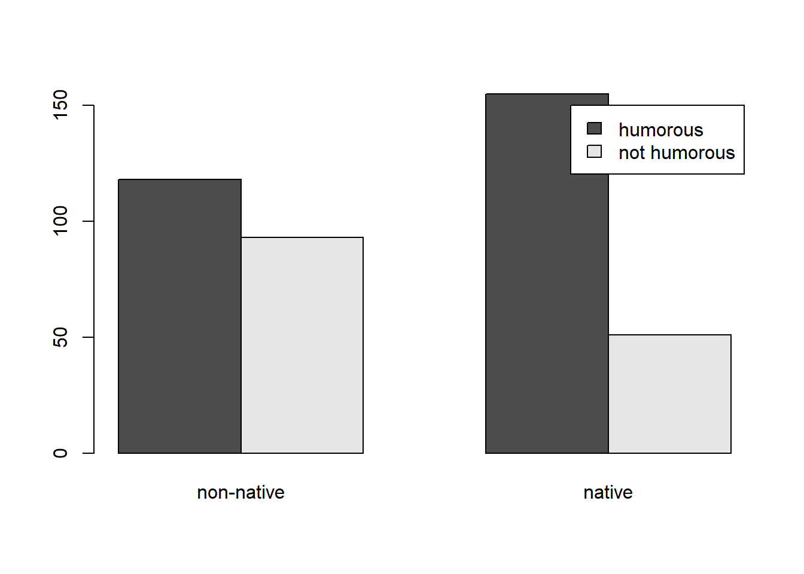

Contingency Tables
2 x 2 Contigency Table
Bilder and Loughin (2015) present the following problem:
Do students whose native language is not English pick up on authors’ efforts to use humor in illustrating points in textbooks? Students at one university were shown a passage from a textbook that was meant to be humorous. Of the 211 students in the study where English was not their native language, 118 thought the passage was humorous. Of the 206 students in the study where English was their native language, 155 thought the passage was humorous. Analyze these data to answer the research question.
To begin we manually enter the data into a matrix and save the object
as d. Setting byrow = TRUE allows us to enter
the data by row. Otherwise the matrix is filled column-wise. Notice the
second field in each row is calculated on-the-fly by subtracting the
humorous count from the total count.
d <- matrix(c(118, 211 - 118,
155, 206 - 155), nrow = 2, byrow = TRUE)
d [,1] [,2]
[1,] 118 93
[2,] 155 51Our data will be easier to work with if we name the rows and columns.
We can do this with the dimnames() function. This allows us
to not only name the rows and columns, but also name the dimensions.
This requires using a list object.
dimnames(d) <- list("English" = c("non-native", "native"),
"Humor" = c("humorous", "not humorous"))
d Humor
English humorous not humorous
non-native 118 93
native 155 51Finally we convert our matrix to a table class. While this does not change the way the data is displayed, this will provide additional data wrangling capabilities later in this example.
d <- as.table(d)
d Humor
English humorous not humorous
non-native 118 93
native 155 51One question we might want to immediately ask is if there is any
association between English and Humor. Does knowing whether or not
someone is a non-native speaker provide information about whether or not
they’ll find authors’ attempts at humor funny? One way to assess this is
with the chi-square test of independence. This is easy to implement with
the chisq.test().
chisq.test(d)
Pearson's Chi-squared test with Yates' continuity correction
data: d
X-squared = 16.363, df = 1, p-value = 5.229e-05The small p-value provides evidence against the null of no association. These two variables seem to be associated in some way. But how are they associated?
One way to investigate is to calculate and compare proportions.
Specifically we want to calculate proportions conditional on English.
This is because we consider English to be the independent variable and
Humor to be the dependent variable. To do this we use the
proportions() function with margin = 1. (Rows
are the first margin, columns are the second margin.)
proportions(d, margin = 1) Humor
English humorous not humorous
non-native 0.5592417 0.4407583
native 0.7524272 0.2475728Of the non-native speakers, about 0.56 found the passage humorous. Of the native speakers, about 0.75 found the passage humorous. That’s a difference of -0.191
The difference in proportions, 0.56 versus 0.75, seems large. What is
the probability we would get a difference this big or bigger if there
really is no difference in the population? We can answer this with a
2-sample proportion test. Base R implements this test with the
prop.test() function. To use it we need marginal totals in
addition to the table counts. We can get marginal totals with the
addmargins() function.
addmargins(d) Humor
English humorous not humorous Sum
non-native 118 93 211
native 155 51 206
Sum 273 144 417Now we have what we need to implement the 2-sample proportion test. The first argument is the total number of “successes” for each group as a vector, or the numerators of the proportions. The next argument is the total number of “trials” for each group as a vector, or the denominators of the proportions.
prop.test(x = c(118, 155), n = c(211, 206))
2-sample test for equality of proportions with continuity correction
data: c(118, 155) out of c(211, 206)
X-squared = 16.363, df = 1, p-value = 5.229e-05
alternative hypothesis: two.sided
95 percent confidence interval:
-0.28720861 -0.09916235
sample estimates:
prop 1 prop 2
0.5592417 0.7524272 Notice the p-value of this test is the same as the chi-square test above. In fact, the two tests are identical. Of more interest is the 95 percent confidence interval on the difference in proportions. This tells us that the difference in proportions between non native speakers and native speakers who understand the authors’ humor is about -0.19, 95% CI [-0.29, -0.10].
One way to visualize this data is by creating a Cleveland dot plot.
The dotchart() function in R allows us to easily create
this plot as long as your data is a matrix or table.
dotchart(d)The dot plot shows how counts of English change conditional on Humor.
It would make more sense to show Humor counts conditional on English. We
can accomplish that by transposing the table using the t()
function.
dotchart(t(d))We can clearly see the counts of students finding humor in the textbook increasing dramatically for those students who are native English speakers.
Bar plots are also an effective way to visualize data of this nature.
A basic bar plot can be created using the barplot()
function. Notice we transpose the table again to ensure counts are shown
conditional on English.
barplot(t(d), beside = TRUE, legend.text = TRUE)
To use the {ggplot2} package to create a bar plot (Wickham 2016), we need to convert our table
into a data frame. Since our data is a table object, this is easy to do
with the as.data.frame() function.
df <- as.data.frame(d)
df English Humor Freq
1 non-native humorous 118
2 native humorous 155
3 non-native not humorous 93
4 native not humorous 51The main function to use when our data frame already contains counts
is geom_col(). The
scale_fill_brewer(palette = "Set2") line sets the color
palette to a colorblind-friendly palette courtesy of the {RColorBrewer}
package (Neuwirth 2022).
library(ggplot2)
ggplot(df) +
aes(x = English, y = Freq, fill = Humor) +
geom_col(position = "dodge") +
scale_fill_brewer(palette = "Set2") +
theme_minimal()To visualize proportions, we need to calculate the proportions and then convert to a data frame.
df2 <- proportions(d, margin = 1) |>
as.data.frame(responseName = "Prop")
df2 English Humor Prop
1 non-native humorous 0.5592417
2 native humorous 0.7524272
3 non-native not humorous 0.4407583
4 native not humorous 0.2475728And now we can use the same {ggplot2} code above substituting “Prop” for “Freq”.
ggplot(df2) +
aes(x = English, y = Prop, fill = Humor) +
geom_col(position = "dodge") +
scale_fill_brewer(palette = "Set2") +
theme_minimal()To compare just the proportions who found the textbook humorous, we can subset the data frame prior to creating the plot as follows:
ggplot(subset(df2, Humor == "humorous")) +
aes(x = English, y = Prop) +
geom_col(position = "dodge", width = 1/2) +
theme_minimal()To conclude this example, let’s restructure our original data to be a
data frame with one observation per subject. This is often how raw data
will look in real life. The uncount() function from the
{tidyr} package (Wickham and Girlich 2022)
allows us to accomplish this. Notice we need to work with the “df”
object we created using as.data.frame() above.
library(tidyr)
df_all <- uncount(df, weights = Freq)
head(df_all) English Humor
1 non-native humorous
2 non-native humorous
3 non-native humorous
4 non-native humorous
5 non-native humorous
6 non-native humorousWith our data in this structure, we can use the modified
prop.test() function from the {mosaic} package (Pruim, Kaplan, and Horton 2017) to carry out
the 2-sample proportion test using R’s modeling syntax. The syntax
Humor | English says compare proportions of Humor
conditional on English.
library(mosaic)
prop.test(~ Humor | English, data = df_all)
2-sample test for equality of proportions with continuity correction
data: tally(Humor ~ English)
X-squared = 16.363, df = 1, p-value = 5.229e-05
alternative hypothesis: two.sided
95 percent confidence interval:
-0.28720861 -0.09916235
sample estimates:
prop 1 prop 2
0.5592417 0.7524272 To carry out the chi-square test of independence, we need to create a
table again. We can do that with the xtabs() function
before piping into the chisq.test() function.
xtabs(~ English + Humor, data = df_all) |>
chisq.test()
Pearson's Chi-squared test with Yates' continuity correction
data: xtabs(~English + Humor, data = df_all)
X-squared = 16.363, df = 1, p-value = 5.229e-05To visualize count data in this format using {ggplot2} we need to use
the geom_bar() function.
ggplot(df_all) +
aes(x = English, fill = Humor) +
geom_bar(position = "dodge") +
scale_fill_brewer(palette = "Set2") +
theme_minimal()To visualize proportions, it makes sense to create a table first,
calculate the proportions on the desired margin, convert back to a data
frame, and then create the plot using geom_col(). Thanks to
the pipe operator, we can do all that on-the-fly before piping into the
{ggplot2} code.
xtabs(~ English + Humor, data = df_all) |>
proportions(margin = 1) |>
as.data.frame(responseName = "Prop") |>
ggplot() +
aes(x = English, y = Prop, fill = Humor) +
geom_col(position = "dodge") +
scale_fill_brewer(palette = "Set2") +
theme_minimal()
It’s worth noting that a 2-sample proportion test can also be analyzed using logistic regression. This is easiest to do when our data has one row per subject. Before doing this it’s important to know which levels of the categorical variables will be considered as the reference level. By default, order is determined alphabetically. So if we model Humor as a function of English, we will be modeling the probability of “not humorous”. It probably makes more sense to model the probability of “humorous”, so we relevel the variable so that “not humorous” is the reference level.
df_all$Humor <- relevel(df_all$Humor, "not humorous")Next we model Humor as a function of English.
m <- glm(Humor ~ English, data = df_all, family = binomial)
summary(m)
Call:
glm(formula = Humor ~ English, family = binomial, data = df_all)
Coefficients:
Estimate Std. Error z value Pr(>|z|)
(Intercept) 0.2381 0.1387 1.717 0.086 .
Englishnative 0.8735 0.2128 4.105 4.05e-05 ***
---
Signif. codes: 0 '***' 0.001 '**' 0.01 '*' 0.05 '.' 0.1 ' ' 1
(Dispersion parameter for binomial family taken to be 1)
Null deviance: 537.52 on 416 degrees of freedom
Residual deviance: 520.12 on 415 degrees of freedom
AIC: 524.12
Number of Fisher Scoring iterations: 4The coefficient for English is relative to “non-native”. The fact it is positive and “significant” tells us that native speakers are more likely to find the textbook humorous. To interpret it, we can exponentiate to obtain an odds ratio.
exp(coef(m)["Englishnative"])Englishnative
2.395314 This says the odds of a native speaker finding the textbook humorous are about 2.4 times higher than the odds of a non-native speaker finding the textbook humorous. This is a relative comparison.
To carry out a 2-sample test, which is an absolute
comparison, we can use the emmeans() and
pairs() functions from the {emmeans} package (Lenth 2022). We set
regrid = "response" to tell the emmeans()
function to calculate probabilities instead of odds ratios.
library(emmeans)
emmeans(m, specs = ~ English, regrid = "response") |>
pairs() contrast estimate SE df z.ratio p.value
(non-native) - native -0.193 0.0455 Inf -4.244 <.0001References
If we calculate proportions down the columns (
margin = 2), we get the proportions conditional on Humor. Of the students who found the passage humorous, about 0.43 were non-native while 0.57 were native.↩︎